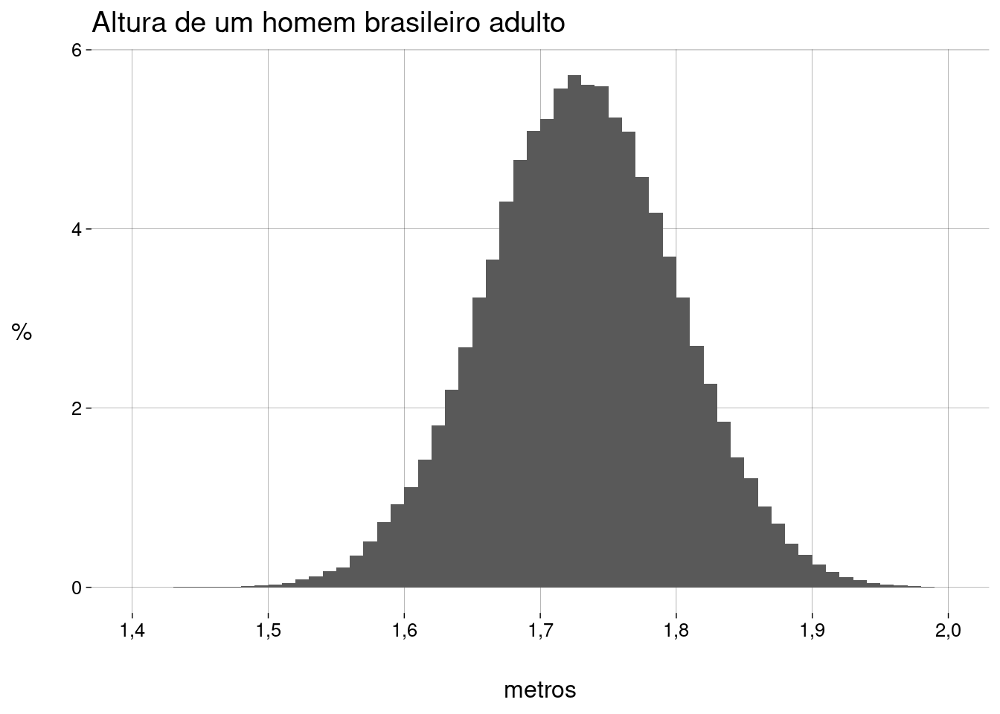
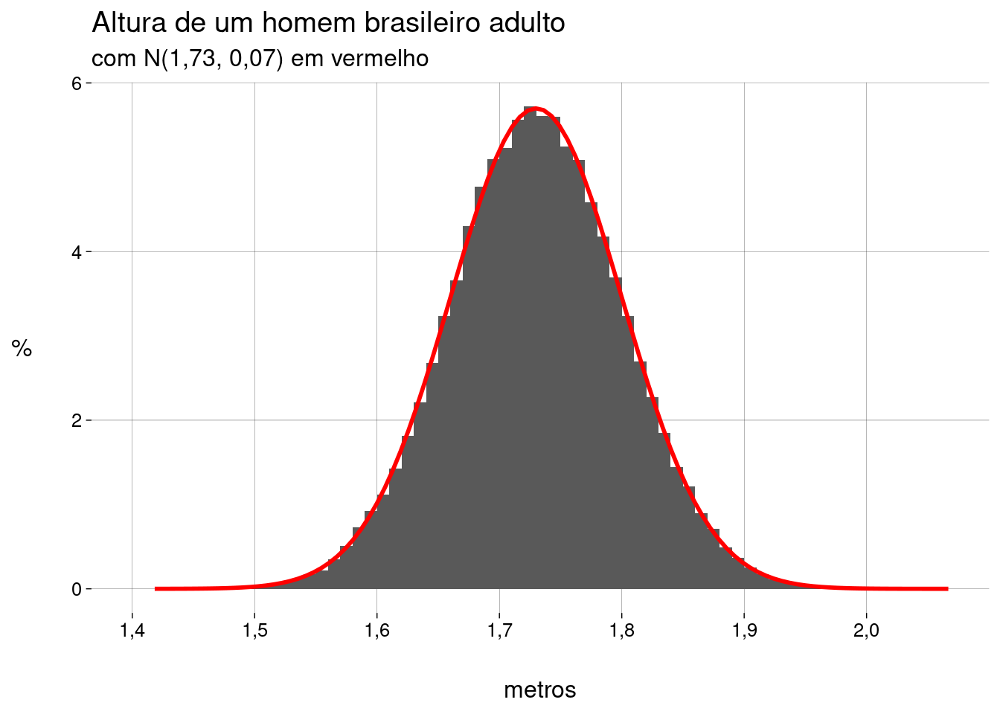

Capítulo 8 Variáveis aleatórias
8.2 O que é uma variável aleatória?
Uma variável aleatória é uma maneira de associar a cada resultado do espaço amostral um número real.
Dependendo do conjunto de números, a variável aleatória pode ser discreta ou contínua.
Falamos sobre a probabilidade de uma variável aleatória assumir um valor (ou uma faixa de valores).
8.3 Exemplos
8.3.1 Lançar dois dados
Definimos \(X = \text{soma dos resultados dos dois dados}\).
Esta é uma variável aleatória discreta, com \(11\) valores possíveis.
A tabela com todos os valores possíveis de \(X\) e suas probabilidades é chamada de distribuição de probabilidade:
| x | P(X = x) |
|---|---|
| 2 | 1/36 |
| 3 | 2/36 |
| 4 | 3/36 |
| 5 | 4/36 |
| 6 | 5/36 |
| 7 | 6/36 |
| 8 | 5/36 |
| 9 | 4/36 |
| 10 | 3/36 |
| 11 | 2/36 |
| 12 | 1/36 |
-
Graficamente:

-
Suponha que a distribuição de probabilidade de \(X\) esteja na seguinte tibble:
glimpse(dados_distr)## Rows: 11 ## Columns: 3 ## $ x <int> 2, 3, 4, 5, 6, 7, 8, 9, 10, 11, 12 ## $ `P(X = x)` <chr> "1/36", "2/36", "3/36", "4/36", "5/36", "6/36", "5/36", "4/36", … ## $ num <dbl> 0,02777778, 0,05555556, 0,08333333, 0,11111111, 0,13888889, 0,16…A coluna
numtem os valores numéricos das probabilidades. -
Qual a probabilidade de conseguir \(10\) ou mais?
Basta somar as probabilidades de \(X=10\), \(X=11\) e \(X=12\):
## [1] 0,1666667 -
Qual a probabilidade de conseguir entre \(6\) e \(8\), inclusive?
## [1] 0,4444444
8.3.2 Altura de um homem adulto
Definimos \(X = \text{estatura em metros de um homem brasileiro adulto, escolhido ao acaso}\).
Esta é uma variável aleatória contínua, com um número infinito não-enumerável de valores.
Segundo o Levantamento do Perfil Antropométrico da População Brasileira Usuária do Transporte Aéreo Nacional, em \(2009\), a estatura média do homem brasileiro adulto era de \(1{,}73\)m, com desvio-padrão de \(0{,}07\)m.
-
Vamos simular uma amostra de muitos homens desta população:
-
Eis um histograma com as percentagens:
homens_plot <- homens %>% ggplot(aes(x = altura)) + geom_histogram( aes(y = after_stat(density)), breaks = seq(1.4, 2, 0.01) ) + scale_x_continuous(breaks = seq(1.4, 2.0, .1)) + labs( title = 'Altura de um homem brasileiro adulto', x = 'metros', y = '%' ) homens_plot -
Agora, sobrepomos o gráfico de uma distribuição normal com a mesma média e o mesmo desvio-padrão que a distribuição das alturas:
homens_normal <- homens_plot + stat_function( fun = dnorm, args = list( 'mean' = media, 'sd' = desvio ), geom = 'line', color = 'red', linewidth = 1 ) + labs( subtitle = paste0('com N(', media, ', ', desvio,') em vermelho') ) homens_normal -
A curva vermelha no gráfico é a função de densidade de probabilidade da distribuição normal, dada por
\[ \text{fdp}(x) = {\frac {1}{\sigma {\sqrt {2\pi }}}}e^{-{\frac {1}{2}}\left({\frac {x-\mu }{\sigma }}\right)^{2}} \]
Em uma distribuição contínua, não faz sentido perguntar o valor de \(P(X = x)\). Como \(X\) pode assumir uma quantidade infinita não-enumerável de valores, esta probabilidade é igual a zero!
Com uma distribuição contínua, vamos sempre perguntar sobre faixas de valores.
-
Qual a probabilidade de um homem ter mais de \(1{,}80\)m?
-
Qual a probabilidade de um homem ter entre \(1{,}60\)m e \(1{,}70\)m?
-
Na amostra:
mean(homens$altura > 1.60 & homens$altura < 1.70)## [1] 0,30317 -
Na distribuição teórica:
## [1] 0,3024722 -
No gráfico:
-
8.4 Valor esperado
O valor esperado (ou esperança matemática) de uma variável aleatória é a média ponderada dos valores possíveis da variável, considerando as probabilidades (ou, no caso contínuo, a densidade de probabilidade) como pesos.
-
No caso discreto:
\[ \mu = E(X) = \sum_i x_i \cdot P(X = x_i) \]
-
No caso contínuo:
\[ \mu = E(X) = \int_{-\infty}^{+\infty} x \cdot \text{fdp}(x) \text{d}x \]
8.4.1 Lançar dois dados
-
Lembrando que a tibble
dados_distrcontém a distribuição de probabilidades do valor da soma de dois dados, o valor esperado é## [1] 7
8.4.2 Lançar um dado
-
O valor esperado do valor obtido em um lançamento de um dado não-viciado (onde cada valor tem a probabilidade \(1/6\)) é
lado <- 1:6 p <- 1/6 sum(lado * p)## [1] 3,5
8.4.3 Altura de um homem adulto
-
Estimamos o valor esperado da população simplesmente calculando a média da amostra:
mean(homens$altura)## [1] 1,729861 -
Se a variável aleatória \(X\) é normalmente distribuída, com média \(\mu\) e desvio-padrão \(\sigma\), i.e., \(X \sim \mathcal{N}(\mu, \sigma)\), então o valor esperado \(E(X)\) é igual a \(\mu\), que é o valor da integral
\[ \int_{-\infty}^{+\infty} x \cdot{\frac {1}{\sigma {\sqrt {2\pi }}}}e^{-{\frac {1}{2}}\left({\frac {x-\mu }{\sigma }}\right)^{2}} \text{d}x \]
8.5 Propriedades do valor esperado
Vamos ver como o valor esperado se comporta.
-
O valor esperado de uma constante é ela mesma:
\[ E(c) = c \]
-
Somar uma constante à variável \(X\) altera \(E(X)\) pelo valor da constante:
\[ E(X \pm c) = E(X) \pm c \]
-
Multiplicar a variável \(X\) por uma constante multiplica \(E(X)\) pelo valor da constante:
\[ E(c \cdot X) = c \cdot E(X) \]
-
O valor esperado da soma (resp. diferença) de duas variáveis aleatórias é a soma (resp. diferença) dos valores esperados:
\[ E(X \pm Y) = E(X) \pm E(Y) \]
-
O valor esperado de uma função \(f(X)\) de uma variável aleatória \(X\) é
-
Caso discreto:
\[ E(f(X)) = \sum_i f(x_i) \cdot P(X = x_i) \]
-
Caso contínuo:
\[ E(f(X)) = \int_{-\infty}^{+\infty} f(x) \cdot \text{fdp}(x) \text{d}x \]
-
8.6 Variância
-
A variância de uma variável aleatória \(X\) é a média ponderada dos desvios quadrados, com as probabilidades como peso.
-
Caso discreto:
\[ \sigma^2(X) = \sum_i (x_i - \mu)^2 \cdot P(X = x_i) \]
-
Caso contínuo:
\[ \sigma^2(X) = \int_{-\infty}^{+\infty} (x - \mu)^2 \cdot \text{fdp}(x) \text{d}x \]
-
-
Em qualquer caso,
\[ \begin{aligned} \sigma^2(X) &= E[(X - \mu)^2]\\ &= E(X^2) - [E(X)]^2 \end{aligned} \]
Faça as contas, partindo de \(E[(X - \mu)^2]\) e usando as propriedades do valor esperado para chegar a \(E(X^2) - [E(X)]^2\).
8.6.2 Lançar um dado
-
A variância é
lado <- 1:6 p <- 1/6 sum((lado - 3.5)^2 * p)## [1] 2,916667
8.6.3 Altura de um homem adulto
-
Estimando pela variância da amostra:
var(homens$altura)## [1] 0,004921803 Se \(X\) é normalmente distribuída com média \(\mu\) e desvio-padrão \(\sigma\), i.e., \(X \sim \mathcal{N}(\mu, \sigma)\), então \(\sigma^2(X) = \sigma^2\). De acordo com o estudo, \(\sigma^2 = 0.07^2 = 0{,}0049\).
8.7 Propriedades da variância
-
A variância de uma constante é zero:
\[ \sigma^2(c) = 0 \]
-
Somar uma constante à variável \(X\) não altera a variância:
\[ \sigma^2(X \pm c) = \sigma^2(X) \]
-
Multiplicar a variável \(X\) por uma constante multiplica a variância pelo quadrado da constante:
\[ \sigma^2(c \cdot X) = c^2 \cdot \sigma^2(X) \]
-
A variância da soma ou diferença de duas variáveis aleatórias é a soma das variâncias das variáveis:
\[ \sigma^2(X \pm Y) = \sigma^2(X) + \sigma^2(Y) \]
Por que a variância da diferença é a soma das variâncias?
Variância significa incerteza.
Considere o seguinte exemplo para entender por que \(\sigma^2(X - Y) = \sigma^2(X) + \sigma^2(Y)\):
Você compra uma caixa de \(500\)g de cereal no mercado. Como o peso não é exato, considere que \(X\) é a variável aleatória que representa o peso do cereal na caixa, com \(\mu_X = 500\)g e uma variância qualquer \(\sigma^2_X\) (que corresponde à incerteza do processo de embalagem do cereal na fábrica).
Você decide comer \(100\text{g}\) de cereal, despejando parte do conteúdo na caixa em uma tigela. Como sua capacidade de medir \(100\text{g}\) não é exata, considere que \(Y\) é a variável aleatória que representa o peso do cereal na tigela, com \(\mu_Y = 100\text{g}\) e uma variância qualquer \(\sigma^2_Y\) (que corresponde à incerteza do seu processo de pesar \(100\text{g}\)).
-
Considere a variável aleatória \(Z = X - Y\), que representa a quantidade de cereal que sobrou na caixa.
Certamente a média \(\mu_Z = \mu_X - \mu_Y = 400\text{g}\).
E a variância \(\sigma^2_Z\)?
O fato de \(Z\) ser o resultado da subtração de duas variáveis aleatórias diminui a incerteza?
Ou a composição de incertezas aumenta a incerteza?
8.8 Mais exemplos
8.8.1 Seguradora
Você tem uma seguradora, com \(1.000\) segurados, cada um deles pagando \(50\) dinheiros por ano.
Por ano, \(1\) dos \(1.000\) segurados morre. Neste caso, sua seguradora deve pagar \(10.000\) dinheiros.
Por ano, \(2\) dos \(1.000\) segurados ficam inválidos. Neste caso, sua seguradora deve pagar \(5.000\) dinheiros.
-
Quanto sua seguradora espera ter de lucro (ou prejuízo) por segurado, por ano?
-
Chamando de \(X\) a variável aleatória que representa o dinheiro pago pela seguradora por apólice, por ano, temos
\[ \begin{aligned} P(X = 10000) &= 1/1000\\ P(X = 5000) &= 2/1000\\ P(X = 0) &= 997/1000 \end{aligned} \]
Daí,
\[ \begin{aligned} E(X) &= 10000 \cdot \frac{1}{1000} \;+\; 5000 \cdot \frac{2}{1000} \;+\; 0 \cdot \frac{997}{1000} \\ &= 20 \end{aligned} \]
- Como cada segurado paga \(50\) dinheiros por ano, sua seguradora lucra, em média, \(30\) dinheiros por apólice, por ano.
-
-
E o desvio-padrão?
-
Calculando a variância antes:
\[ \begin{aligned} \sigma^2(X) &= (10000 - 20)^2 \cdot \frac{1}{1000} \;+\; (5000 -20)^2 \cdot \frac{2}{1000} \;+\; (0 - 20)^2 \cdot \frac{997}{1000} \\ &= 9980^2 \cdot \frac{1}{1000} \;+\; 4980^2 \cdot \frac{2}{1000} \;+\; (- 20)^2 \cdot \frac{997}{1000} \\ &= 149600 \end{aligned} \]
-
O desvio-padrão é a raiz quadrada de \(\sigma^2\):
\[ \sigma = 386{,}78 \]
-
8.8.2 Gerador de números aleatórios
Você programa um gerador de números aleatórios \(x \in [1, 3] \subset \mathbb{R}\).
Considere \(X\) a variável aleatória que representa os números gerados.
-
\(X\) é uma variável aleatória contínua, com fdp
\[ f(x) = \begin{cases}\displaystyle \frac{1}{2} & \text{se } x \in [1, 3] \\ \,0 & \text{se } x \not\in [1, 3] \end{cases} \]
cujo gráfico é
Isto significa que a densidade de probabilidade está distribuída uniformemente no intervalo \([1, 3]\).
-
Vamos calcular o valor esperado \(E(X)\):
\[ \begin{aligned} E(X) &= \int_{-\infty}^{+ \infty} x \cdot f(x) \text{d}x \\ &= \int_{1}^{3} x \cdot \frac{1}{2} \text{d}x \\ &= \frac12 \cdot \left.\frac{x^2}{2} \right|_1^3 \\ &= 2 \end{aligned} \]
Ou seja, a média dos números gerados, depois de muitas execuções, vai ser \(2\).
Vamos calcular a variância \(\sigma^2(X)\):
\[ \begin{aligned} \sigma^2(X) &= \int_{-\infty}^{+ \infty} (x - 2)^2 \cdot f(x) \text{d}x \\ &= \int_{1}^{3} (x-2)^2 \cdot \frac{1}{2} \text{d}x \\ &= \frac13 \end{aligned} \]
Isto vai dar um desvio-padrão \(\sigma = \sqrt{\sigma^2} = \frac{\sqrt{3}}{3} \approx 0{,}58\).
-
Mas R tem este gerador! Vamos gerar muitos valores e calcular a média e o desvio-padrão:
## [1] 2,000145sd(valores)## [1] 0,5774866 -
Como exercício, verifique que, para qualquer variável aleatória contínua \(X\) distribuída uniformemente entre \(a\) e \(b\), i.e., com fdp
\[ f(x) = \begin{cases}\displaystyle \frac{1}{b - a} & \text{se } x \in [a, b] \\ \,0 & \text{se } x \not\in [a, b] \end{cases} \]
ocorre que
\(E(X) = \frac{a+b}{2}\), e
\(\sigma^2(X) = \frac{(a - b)^2}{12}\).